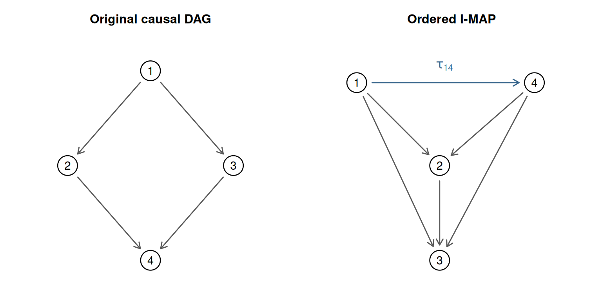

Code
knitr::kable(imap_results$summary)| check | cases |
|---|---|
| DAGs in fixed topological order | 1024 |
| Ancestor pairs | 6313 |
| Forward adjacent swaps | 3200 |
| Unconstrained reverse examples | 100 |
Take \(1\to2\), \(1\to3\), \(2\to4\), \(3\to4\), with treatment \(d=1\) and outcome \(y=4\). Write
\[ L^\top=\begin{pmatrix} 1&0&0&0\\a&1&0&0\\b&0&1&0\\0&c&e&1 \end{pmatrix},\qquad D=\operatorname{diag}(v_1,v_2,v_3,v_4). \]
Thus \(a=L_{12}\), \(b=L_{13}\), \(c=L_{24}\), \(e=L_{34}\) and
\[ \tau_{14}=ac+be,\qquad O=\varnothing. \]
The sign follows from \(B=-L\) off the diagonal: each causal path has two edges. Starting from \((1,2,3,4)\), transpose \((3,4)\) and then \((2,4)\) to obtain ordering \((1,4,2,3)\). Put
\[ s_3=v_4+e^2v_3,\qquad s=s_3+c^2v_2,\qquad t=ac+be. \]
Analytical result. The resulting factorization, displayed in original node labels, is
\[ \widetilde L^\top= \begin{pmatrix} 1&0&0&0\\ a-tcv_2/s&1&0&cv_2/s\\ b-be^2v_3/s_3&cev_3/s_3&1&ev_3/s_3\\ -t&0&0&1 \end{pmatrix}, \]
\[ \widetilde D=\operatorname{diag}\left(v_1,\frac{v_2s_3}{s}, \frac{v_3v_4}{s_3},s\right). \]
The last row represents \(X_4=tX_1+\widetilde\epsilon_4\). Both directed paths contribute to the outcome coefficient through \(t=ac+be\). All denominators are positive.
The I-MAP graph has edges \(1\to4\), \(1\to2\), \(4\to2\), \(1\to3\), \(4\to3\), and \(2\to3\). It has six edges, while the original graph has four. Its eight-dimensional ambient parameter space must be constrained to retain the original six-dimensional model. If \(ac+be=0\), the numerical \(1\to4\) coefficient vanishes even though that edge belongs to the graph-defined I-MAP.
Start with an unconstrained factorization in \((1,4,2,3)\),
\[ \widetilde L^\top=\begin{pmatrix} 1&0&0&0\\a'&1&0&f\\b'&h&1&g\\c'&0&0&1 \end{pmatrix},\qquad \widetilde D=\operatorname{diag}(w_1,w_2,w_3,w_4),\quad w_j>0. \]
To restore \((1,2,3,4)\), transpose \((4,2)\) then \((4,3)\). Define
\[ s_2=w_2+f^2w_4,\qquad t_4=\frac{w_4w_2}{s_2},\qquad A=\frac{c'w_2+fw_4a'}{s_2}. \]
The two restored coefficients absent from the original diamond are
\[ L^{\mathrm{back}}_{23}=h-\frac{gfw_4}{s_2},\qquad L^{\mathrm{back}}_{14}=\frac{w_3A+gt_4b'}{w_3+g^2t_4}. \]
Therefore the exact constraints are
\[ h(w_2+f^2w_4)-gfw_4=0,\qquad w_3(c'w_2+fw_4a')+gw_4w_2b'=0. \]
These polynomial equations include all positive variance values and do not divide by an edge coefficient. When \(w_2=w_3=w_4=1\), they reduce to
\[ h=\frac{gf}{1+f^2},\qquad c'+a'f+gb'=0. \]
Solving the latter as \(g=-(c'+a'f)/b'\) is valid only on the chart \(b'\ne0\). At \(b'=0\), keep \(c'+a'f=0\) and \(h=gf/(1+f^2)\); excluding that case would discard valid parameter values. Unit transformed variances are a restriction on the example, not a harmless simplification covering every original model. The general formulas above allow arbitrary positive transformed variances.
The downloadable validation script uses base R and seed 20261010. It enumerates all \(2^{10}=1024\) DAGs compatible with the fixed ordering \((1,2,3,4,5)\), and all ancestor treatment-outcome pairs within each. This is exhaustive for that finite ordered class, not for arbitrary node counts or every labeled five-node DAG.
The graphical reference uses d-separation by ancestral moralization. The numerical reference independently computes regressions from \(\Sigma\). For each pair, the script constructs a closest ordering, applies the forward swaps, checks the outcome parent set, compares against direct modified Cholesky regression, verifies covariance and the effect coefficient, and reverses the transformation. One coefficient draw per graph is uniform on \([-0.8,0.8]\), with error variances uniform on \([0.5,2]\). It also checks the diamond formula, the general reverse formulas on 100 unconstrained examples, exact path cancellation, and rejection of a non-adjacent transposition. Absolute tolerance is \(10^{-9}\).
knitr::kable(imap_results$summary)| check | cases |
|---|---|
| DAGs in fixed topological order | 1024 |
| Ancestor pairs | 6313 |
| Forward adjacent swaps | 3200 |
| Unconstrained reverse examples | 100 |
imap_plot_diamond()
knitr::kable(imap_results$errors, digits = 17)| check | maximum_absolute_error |
|---|---|
| covariance | 1.33e-15 |
| regression | 2.22e-15 |
| round_trip | 6.70e-16 |
| effect | 0.00e+00 |
| diamond | 1.10e-16 |
| constraints | 2.20e-16 |
The examples use \(a=-0.7\), \(b=0.4\), \(c=-0.6\), \(e=0.8\) and original variances \((1.2,0.7,1.5,0.9)\):
knitr::kable(imap_results$diamond, digits = 5)| parameter | value |
|---|---|
| total effect | 0.740 |
| outcome residual variance | 2.112 |
These are population-parameter calculations, not simulated data or posterior inference. The analytical arguments establish the general results; the finite checks detect implementation errors. They do not prove a theorem or evaluate Bayesian prior sensitivity.